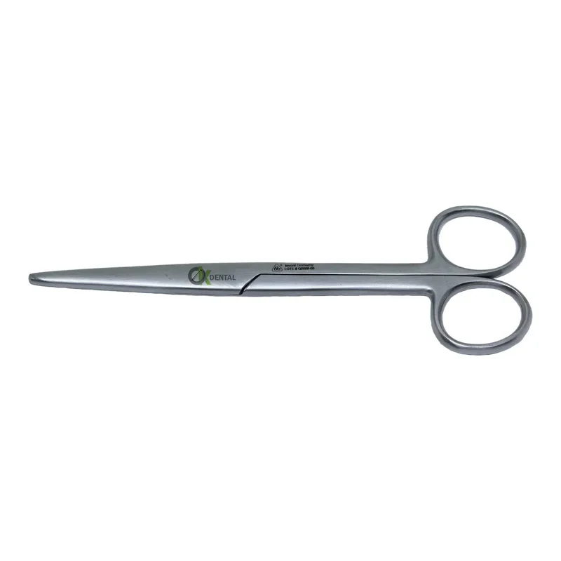
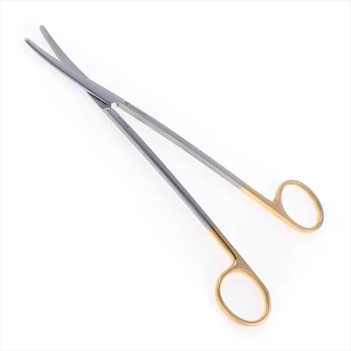
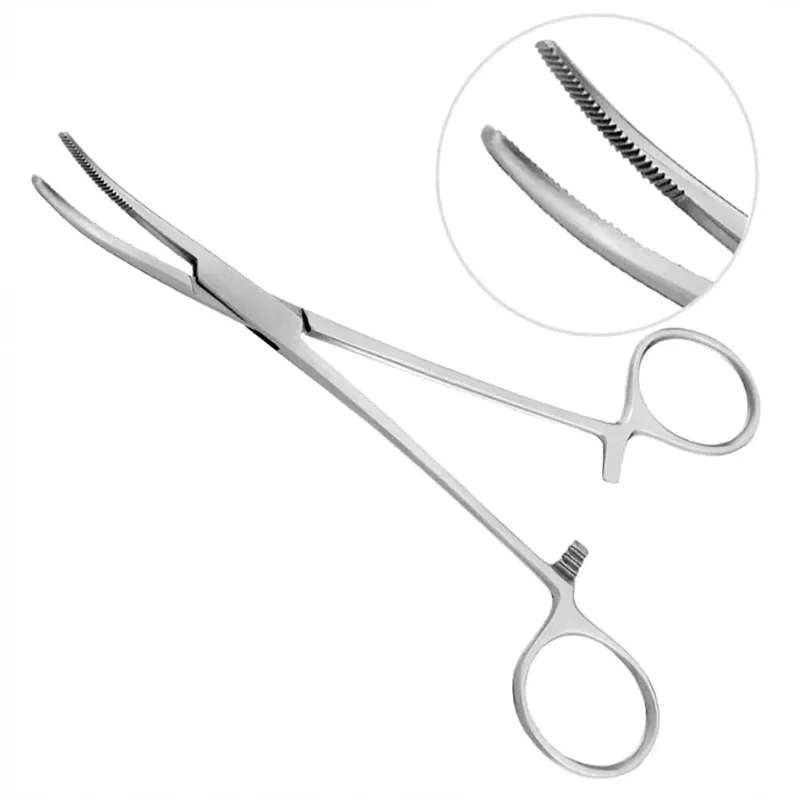
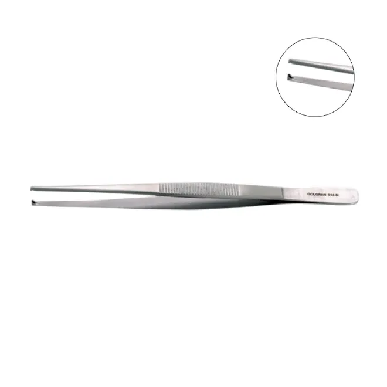
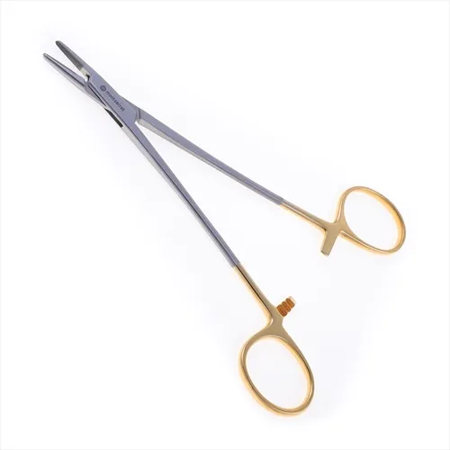
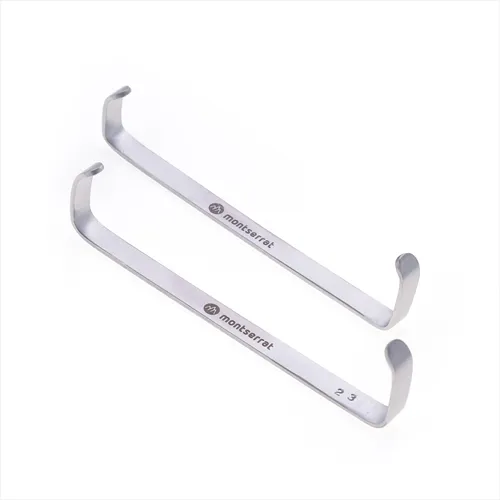
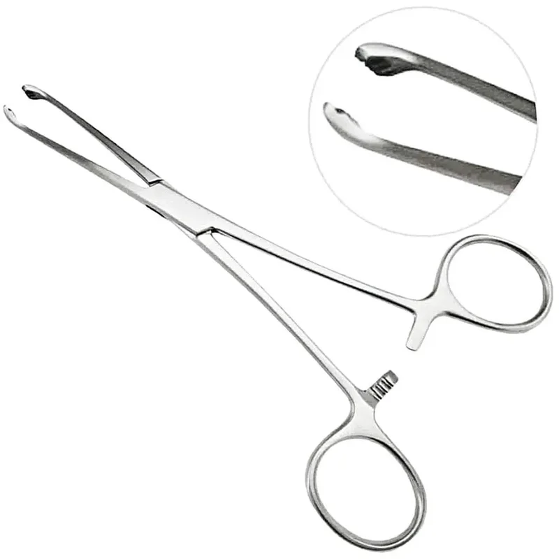
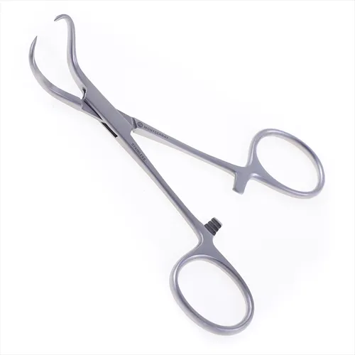

Central de Materiais e Centro Cirúrgico
Biblioteca de Materiais Cirúrgicos
Guia completo de instrumentais, campos, fios de sutura, acessórios e processos de esterilização. Fundamentado em práticas baseadas em evidências para a Enfermagem Perioperatória.
Visão Geral: Segurança e Qualidade
A seleção, o manuseio e o reprocessamento adequado de materiais cirúrgicos são pilares da segurança do paciente e da prevenção de Infecções de Sítio Cirúrgico (ISC).
Eficácia Clínica
Garantir precisão e controle anatômico durante as intervenções.
Biossegurança
Uso de aço inoxidável cirúrgico resistente à corrosão e esterilização.
Atributos Críticos (ISO 13485)
- Alta resistência estrutural e térmica.
- Design ergonômico anti-fadiga.
- Rastreabilidade de lote (RDC 15/2012).
- Compatibilidade com autoclave/peróxido.
Categorias Principais
Instrumentais Cirúrgicos Básicos (Mesa de Mayo)
Composição clássica dos 4 tempos operatórios: Diérese, Hemostasia, Exérese e Síntese.

Cabo de Bisturi
DiéreseCortes e incisões precisas

Lâminas
DiéreseDescartáveis para bisturi

Tesoura Mayo Reta
DiéreseSecção de tecidos densos/fios

Tesoura Metzenbaum
DiéreseDissecção de tecidos delicados

Pinça Kelly Curva
HemostasiaPinçamento de vasos médios

Pinça Dente de Rato
PreensãoPreensão firme de pele

Porta-Agulha Mayo
SínteseSustentação de agulhas

Afastador Farabeuf
ExposiçãoAfastador manual em "C"

Pinça de Allis
PreensãoPreensão de tecidos densos

Pinça Backhaus
PreensãoFixação de campos
Equipamentos do Centro Cirúrgico
Aparelhagem essencial para suporte vital, anestesia e monitorização transoperatória.

Arco Cirúrgico (Scopia)
Raios-X em tempo real

Bomba de Infusão
Infusão volumétrica contínua

Bomba de Seringa
Anestesia venosa total (TIVA)

Capnógrafo
Medição de CO2 exalado

Cardioversor
Desfibrilação e cardioversão

Carro de Emergência
Insumos para PCR

Carro de Anestesia
Gases e ventilação mecânica

Monitor Multiparametros
Sinais vitais em tempo real

Foco de Cirurgia
Iluminação LED/Halógena fria

Aspirador Cirúrgico
Sucção de fluidos e sangue
Materiais de Consumo
Boas Práticas: CME e Prevenção
- Rastreabilidade RDC 15: Todo material reprocessável deve conter identificação de lote e validade da esterilização.
- Descarte imediato de instrumentais que apresentem oxidação (ferrugem), ranhuras desgastadas ou articulações rígidas.
- A contagem de compressas e perfurocortantes deve ser feita antes, durante e após o fechamento da cavidade (Time-out Cirúrgico).